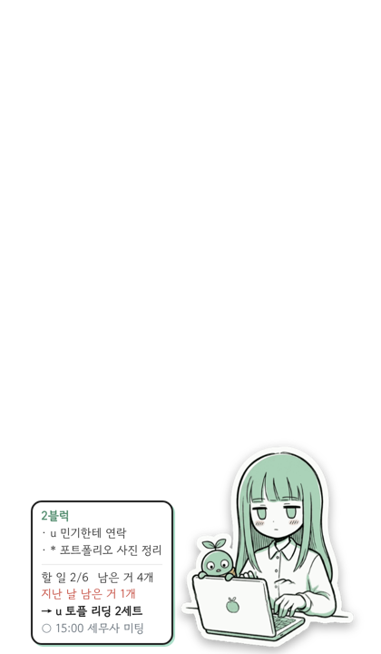
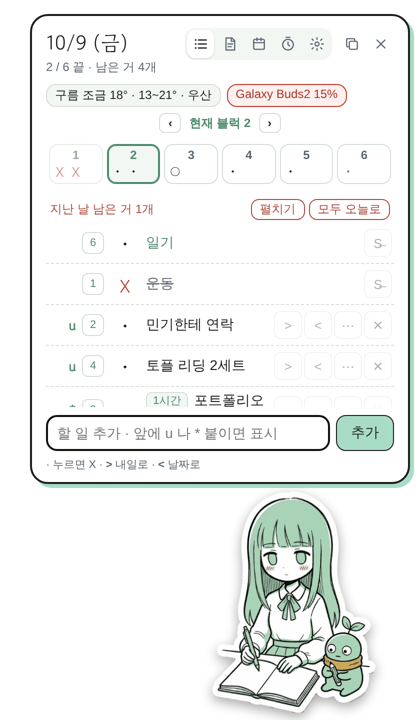
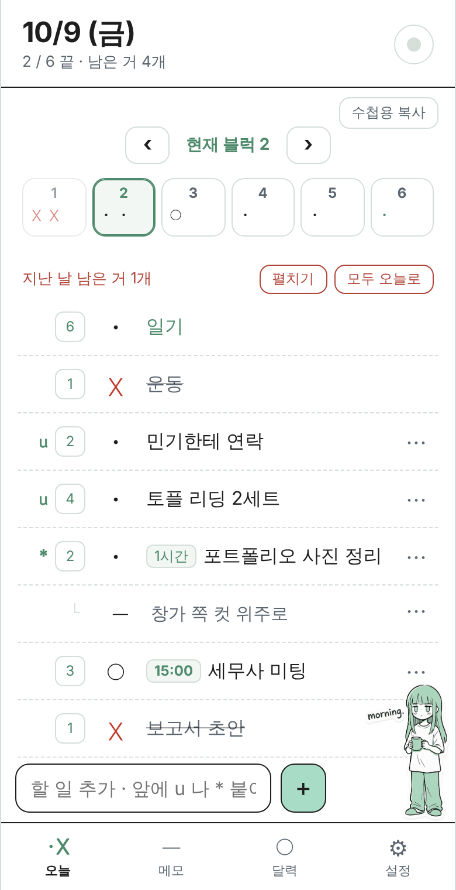

1Getting started
- PC: unzip
DeskBuddy-latest.zipand runinstall.bat. A character appears in the corner of your screen. - Click the character to open the task panel. Drag her anywhere. Whichever corner she sits in, the speech bubble and card open toward the other side.
- From any window, Ctrl+Alt+D opens the task panel ready to type. Press again to close it.
- Updates are checked automatically. To check now: Settings › Update › Check for updates.
2The screen



- Character — her drawing changes with the time and what you're doing (typing, writing, meals, snacks, night, headphones when music plays…).
- Speech bubble — reminds you of tasks and praises you when you finish. When she asks something, buttons appear.
- Card — the small card always beside her. Choose what it shows (date, time, current block, tasks, u, memos, weather, battery, now playing…), the order, and its text size and width in Settings.
- Task panel — the icons on top switch between Today · Memos · Calendar · Timer · Settings. Drag a corner of the panel to resize it.
3Symbols
The same marks you use in your notebook, so the notebook and the app speak the same language.
| Mark | Meaning | In the app |
|---|---|---|
| · | Task | Anything you write is a task. Tap the mark to make it X. |
| X | Done | Tap again to undo. Done tasks stay on the list. |
| > | Moved to tomorrow | The > on a task. It appears on tomorrow's list; today keeps a >. |
| < | Moved to a set date | Tap < and pick a date. "→ 10/20" shows where it went. |
| ○ | Event | Something at a set time. Tap to X when it's over. Not counted as a task. |
| — | Memo | Put it under a task and it becomes that task's note. |
| ! | Idea | Something that came to mind. Not ticked off. |
| u | Quick win (urgent) | Done in 5–10 minutes. These gather at the top. |
| * | Important | Takes longer, but must get done. |
| cancel | Struck out — not this time | When the day turned out different. Not counted. Routines: "strike out for today". |
| └ | Sub-item | A task or memo indented under a task. Follows that task's block. |
4Writing tasks
Type in the box at the bottom and press Enter. Start with a mark and it's applied.
| Type this | You get |
|---|---|
u Call Minki | a u task |
* Portfolio photos | an important (*) task |
u * Check contract | u + important |
o Tax meeting or ○ … | an event ○ |
- Window-side shots or — … | a memo — |
! Exhibition idea | an idea ! |
ㄴ Drop off prints | a sub-task under the task above |
ㄴ — Check the place | a memo under the task above |
o 10:00 Dentist | an event at 10:00 (a time at the front becomes the time; ranges like 9:30-11:00 Study too) |
New tasks go into the current block (or the block you're looking at). To copy into your notebook, use Copy on the panel (phone: Copy for notebook) — you get plain text with the marks.
Writing tomorrow ahead: tap tomorrow in the calendar and write there, or write it today and move it with >. What's written ahead waits, folded, at the bottom of today's list ("Tomorrow · n written ahead").
Reordering: on PC drag a row; on the phone use ↑ ↓ in ⋯. On PC, dropping onto the middle of another task puts it underneath as a sub-task.
5Blocks (Block Six)
The day is split into six blocks. You move to the next block yourself, not the clock.
- Marks in a cell = that block's tasks (three per line). The bold outline is the current block.
- ‹ Block 2 › moves between blocks. If tasks are left she asks whether to bring them along. Moving brings that block's tasks to the top.
- Tap a block cell: once = its tasks on top (others faded) · twice = only that block · three times = everything.
- Tap the empty space around the cells to group the list by block.
- Finish everything in a block and she asks, "Move on to the next block?"
- The small number on each task row is its block. Tap to change it.
6The ⋯ menu — one task in detail
The ⋯ on a task (on the phone you can also tap the text).
- Edit text — the box at the top. Enter saves.
- Strike out — decided not to do it. Tap again to remove the line.
- Type — · task / ○ event / — memo, and u · * on or off.
- Plan — "When & where?" (e.g. after lunch, at my desk), shown small under the task. ✂ Too big? Just the first step — adds a 5-minute first step right underneath as a u task.
- Under — ↳ sub-task (Enter to add several), — add a memo, move under the one above / take out.
- Time — how long (15m · 30m · 1h · 2h) or a start–end time, shown as a small tag before the task.
7Leftovers from earlier days
The list doesn't vanish at midnight. The day turns over at "Day starts" in Settings (4 a.m. by default).
Unfinished tasks from earlier days gather in red above today's list (last 14 days).
- ↩ bring into today (the original day keeps a >) · ✕ let it go · All to today
- Sub-tasks travel with their task.
- On days with leftovers she doesn't scold — she says "just bring one in".
8Routines
- Tasks that join today's list every day (or on chosen weekdays). Only their text color differs.
- Add, pick weekdays and reorder in Settings › Daily routines. They can have a block too (kept for every day).
- On a special day, strike out for today — on PC hover the routine and press S̶ on the right; on the phone tap the block number on the left.
9Memos · Calendar
- Memos — several, first line is the title. Pin to top, reorder (PC: drag ⋮⋮), export as TXT. The card can show their first lines.
- Calendar — each day shows done/total and the first event. Tap a day to add an event (with a time) or a task (today or later).
10Timer · Alarms (PC)
- Timer — turn the dial (one turn = 60 min) or type a number. Your last 3 times appear below.
- Alarms — a plain digital-clock beep. Can repeat daily. The phone app's settings show the same alarms, and with the iPhone widget they arrive as phone notifications too.
11Characters
- Shiori (mint) — quiet and cool, with her sprout.
- Fubuki (yellow) — a cheeky hacker with an eyeball drone.
- Suu (blue) — a sunny cheerleader with Wangkko the golden retriever.
- Notices only — no character: a small notebook icon and short notices.
Switching characters switches every screen's colors to theirs. Their name, what they call you ("Hey", your name…), how chatty they are, and how often the drawings change are all in Settings.
12Phone app · Sync
- On PC: Settings › Phone sync › Create a sync code — a 16-character code and a QR appear.
- Scan the QR with your phone camera, or open the phone app.
- iPhone: Safari Share › Add to Home Screen. Android: Chrome ⋮ › Install app.
- Open the home-screen app, go to Settings › Sync, enter the code and tap Connect.
- Tasks, blocks, routines, memos, events, alarms, character and language sync. Device-only settings such as window size don't.
- It syncs when an app opens, every 30 seconds while open, and a few seconds after changes. Sync now: PC tray › Sync with phone now; phone: the dot at top right.
- Everything is encrypted with the sync code before it's uploaded — not even the server can read it. Don't share your code.
- iPhone home and lock screen widgets and notifications → widget guide (Korean)
13Settings at a glance
| Tab | What's there |
|---|---|
| Basics | Language, character name, how chatty, how often drawings change, meal and wrap-up times, weather city, bubble position, what she calls you |
| Size · transparency | Character and text size, panel scale/width/height, opacity, card text size and width, work hours, day starts |
| Always show next to her | What the card shows, in what order, how many (the card previews beside the panel while Settings is open) |
| Window | Call-up shortcut, always on top, hold still, solid on mouse-over, click-through (grab with Ctrl), start with Windows, weather / Bluetooth / music / CPU |
| Routines · Phone sync · Update · Character | As named |
The phone app's settings are in tabs too (Sync · Character · Basics · Alarms · Routines · More). More › Design the widget lets you preview the widget while you choose.
14Beating procrastination — what's built in
?FAQ
It's past midnight but the list hasn't changed
That's expected. Until "Day starts" (4 a.m. by default) it still counts as the day before. Change it in Settings.
The character covers other windows / catches my clicks
Turn on Settings › Window › Click-through — she can only be grabbed while Ctrl is held. Lowering opacity, or turning off "Solid on mouse-over", helps too.
I ticked an event but the count didn't go up
Events (○) aren't counted as tasks. To count one, ⋯ › Type › task.
What I wrote on the phone isn't on the PC
Opening the PC task panel syncs right away. If not, tray › Sync with phone now, and check the status line in Settings › Phone sync.
The new version doesn't arrive
PC: Settings › Check for updates (it can take a few minutes after a release). Phone: close and reopen the app and she'll ask "A new version is out". There's also Settings › More › Check for updates.
How do I uninstall?
Choose uninstall in the tray menu; it asks whether to keep your records.